Unboxing Publisher and adding Question mode
I rebuilt two of my existing data projects as Publisher packages, used them to learn more about Publisher and its codebase, and added a new way to ask a question in the explorer.
- Two new example packages,
questionable-footballandsignals-research, rebuilt from data.questionablefootball.com and stocks.palm-springs.ai on Publisher. Every number is defined in Malloy, not in an export script or in app code. - I spent time with every surface: HTML data apps, no-code dashboards, Malloy notebooks, and model code. Together that is about 3,000 lines of Malloy and 6,300 lines of HTML, JS and CSS. Opus 5.5 is a beast!
- Question mode is a new way to build a query in the model explorer. The user builds a query by answering three questions (measure, group by, segment by), and any combination of answers draws a valid chart. Switching to the Fields builder keeps the query: all Question mode queries are starting points for what can be expressed in the Fields mode builder.
- The teardown: the model, the governed query path, and the agent workflow all work great (genuinely first-class). The friction was in the first ten minutes (connecting MCP, reloading, stale models) and in the explorer, which assumes its user already thinks in Malloy or Looker.
- The experiment: a fresh agent, starting cold from another repo, built two no-code dashboards in about an hour and hit the same early friction.
- Part 2 follows these packages into the Credible demo workspace, a front door to Publisher where user content powers an autonomous analytics workspace & library.
01Unboxing
What comes in the box, and what a new user, or an agent, sees in the first hour.
Publisher serves Malloy packages over REST, MCP, and puts a Console UI in front of them. A
package
is a directory: publisher.json, some .malloy models, data or a connection, and
optionally a public/ folder of pages. From that one directory you get six surfaces, all leveraging
the
same governed semantic model:
| Surface | What it is | Who it's for |
|---|---|---|
| Model | Sources, dimensions, measures and views in .malloy files |
Developers, and whoever owns the definitions |
| Explorer | Build a query against a source in the Console | Analysts and operators who want to answer their own structured questions |
| Dashboard | A tagged dashboards/*.malloy file: filters, grid layout, drill-through |
Operators who want filters and no code, viewers who want to see the data |
| Notebook | A .malloynb file that mixes prose and queries |
Analysts and technical viewers who want to walk through one argument or workflow |
| Data app | Self-contained HTML in public/ calling Publisher.query |
Developers who build custom applications and tools that leverage governed data modeling, viewers who want to use the data |
| Chat | The conversational client you bring (Claude, Cursor, Codex), connected over MCP (Publisher hosted). It discovers and queries the other surfaces, and builds from them | Anyone who would rather ask than click or write by hand |
The first hour
Despite being as optimistic and leaned in as I am about agentic software development and analytics, I
would still
describe my approach to prompting code agents as "manual mode". I open Cursor and look for the "IDE" button so
I can always see the repo and the code I'm editing. I can't read all the code that agents are
generating for me anymore,
but I
do still read
the code.
My experience for this unboxing started with the Publisher repo as the entry point, and familiarity
with how modern codebases work.
The following sections describe the two example packages I added to the repo, powered by Publisher. At the
bottom of this document I reflect more on how I expect customers & real world users to encounter these
concepts,
and run a simple experiment that I'd like to continue.
02Prior art
Both packages started from projects I've already been working on and had data access, so the design question for me was never "what should this show?" It was "can Publisher power it?"
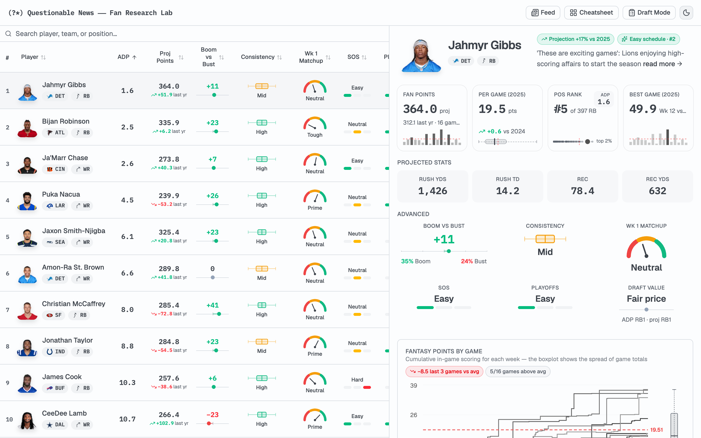
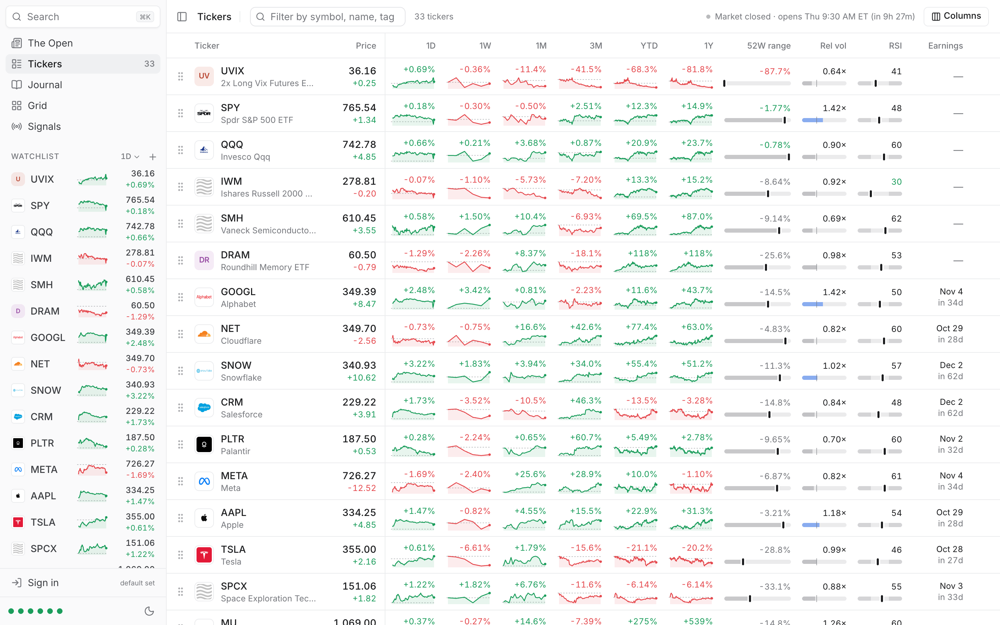
03Working example: Questionable Football
A draft-day tool for a fantasy manager in a 12-team, half-PPR league. The cheatsheet page answers two questions: "who do I take with this pick?" and "do I take this position now, or wait for my next turn?" The other pages allow for in-depth player and team analysis before the draft or between picks.
The questionable-football package is built from three modeling layers.
football.malloy describes
the NFL itself: teams,
roster, games, and
plays.
fantasy.malloy scores every play-by-play game log entry under half-PPR rules written as dimensions,
then rolls that up
into box scores, season finishes, and the 2025 and 2026 draft markets. market.malloy captures the
2026
betting lines and futures. Each page queries a small scoped source (player_app.malloy and so on)
which declares the core public interface for that page.
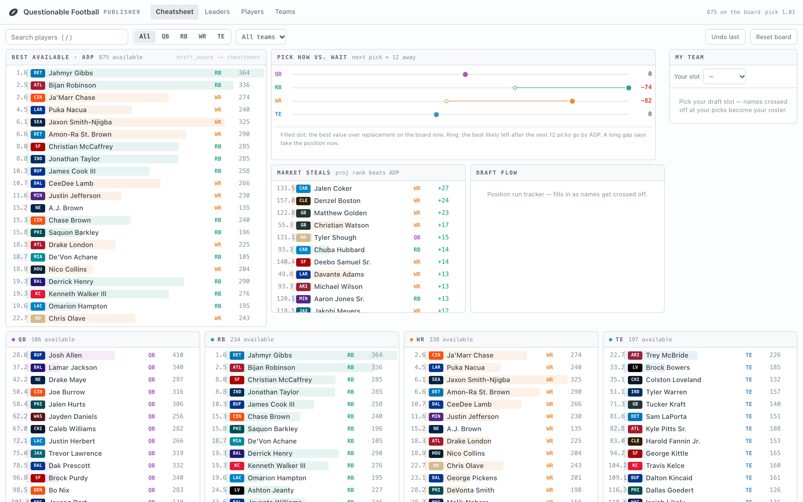
fantasy.malloy
source.
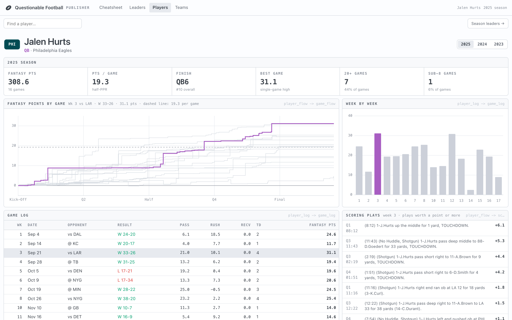
player_app.malloy source.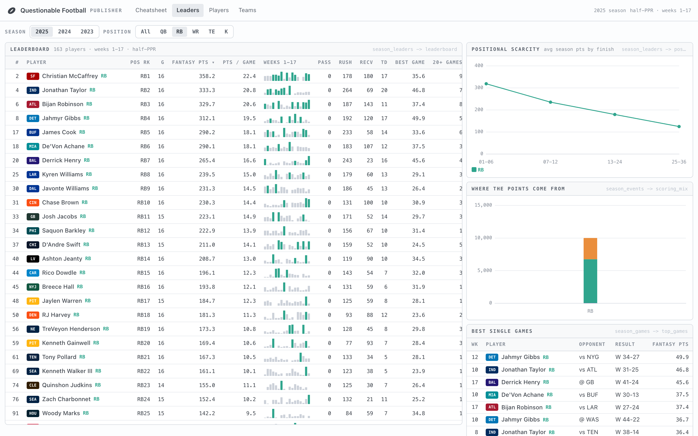
leaders_app.malloy
source.
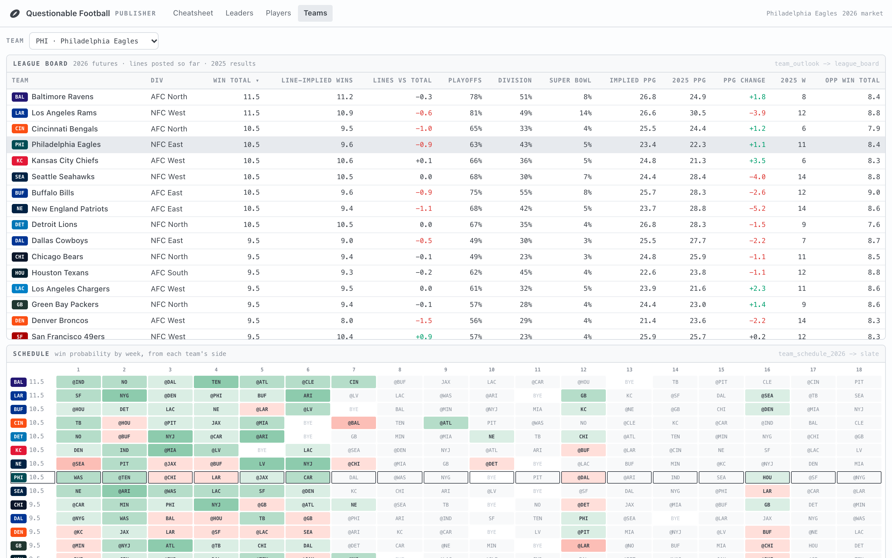
team_app.malloy source.
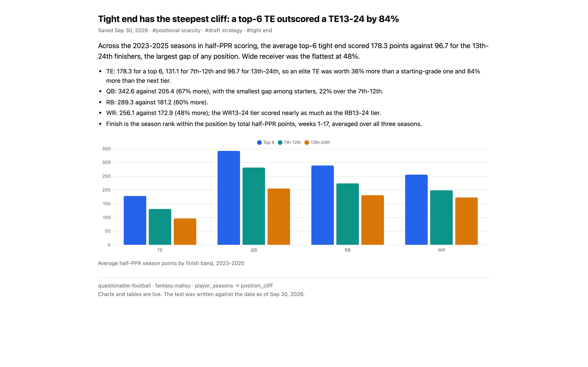
player_seasons -> position_cliff live.
The text records the date it was written on, so a reader (or agent) can tell if the chart and the
finding have
drifted apart. An integration with materialization UX to keep the finding in sync with the
data should be explored in a future update.04Working example: Signals Research
A watchlist diary and technical signals workbench for a discretionary trader who does their own market research. The pages answer two questions: "which names need attention today?" and "has this setup actually worked before?" The signals methodology used here was designed by Opus 5.5.
market.malloy holds the raw fact tables. signals.malloy is the experiment: one row
per
symbol
per session with every causal feature, forward returns as labels, one row per signal firing with the base rate
it's judged against, and a verdict of Holds, Inverts, Noise or Thin.
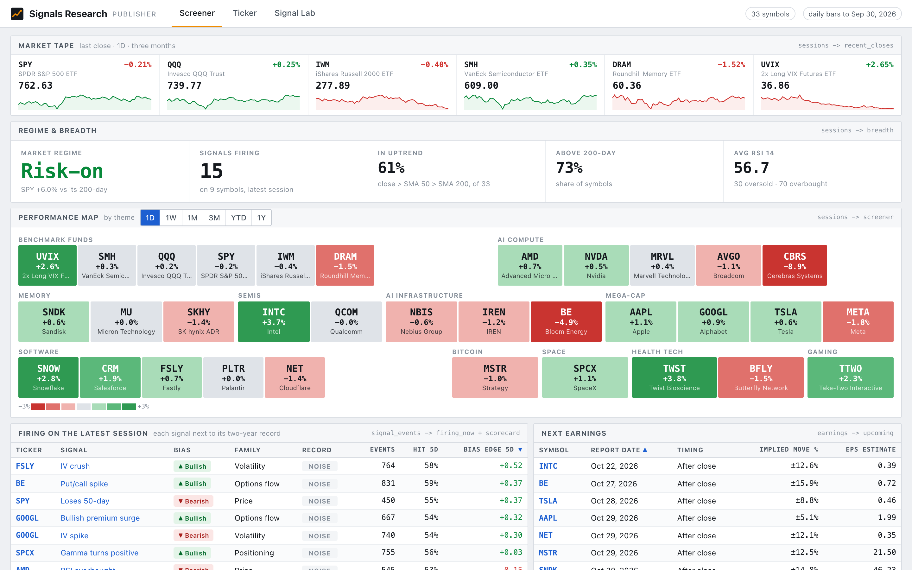
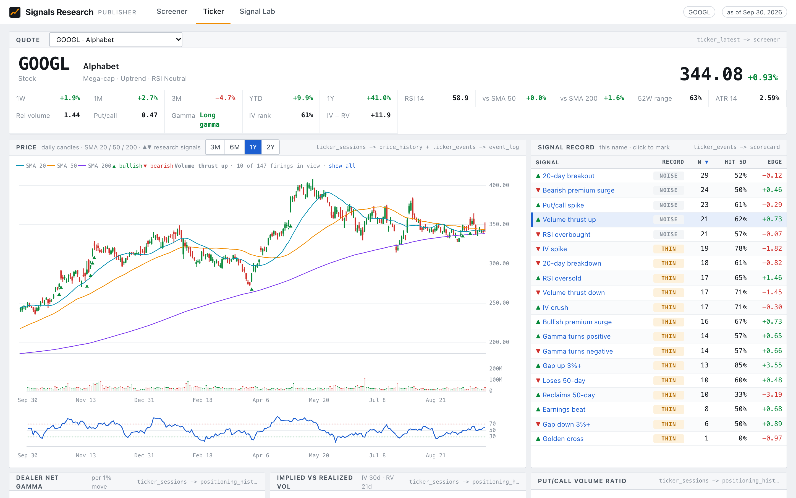
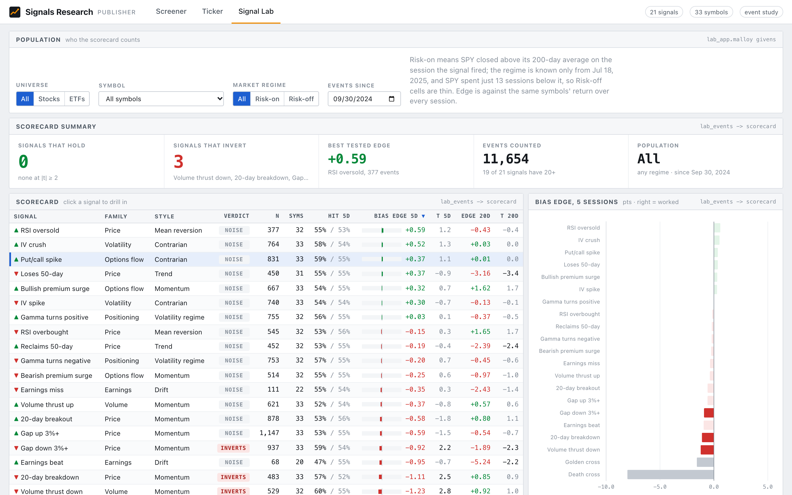
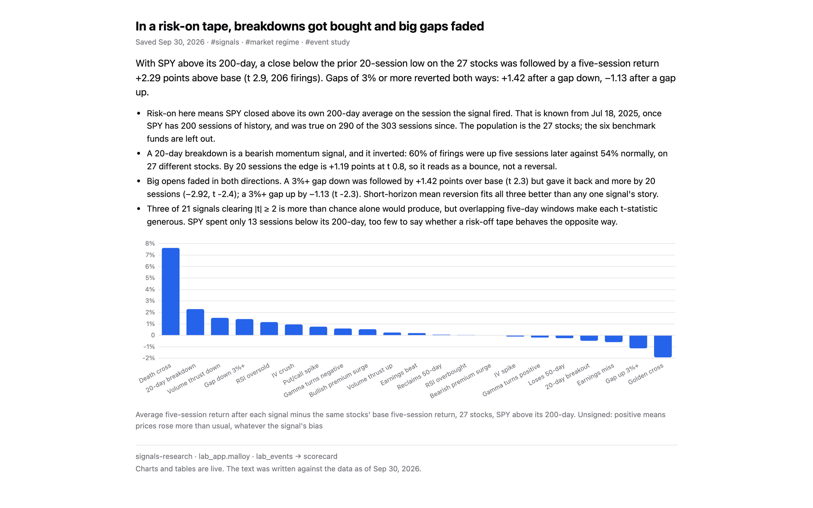
05Unboxing takeaways: what the examples taught me
In the original projects these example packages are based on, the data modeling logic lives in code that the
consumer can't easily re-use:
an SQL export script in
one, application TypeScript in the other. As Publisher packages, every rule is a named Malloy field with
#(doc) annotations for additional context. That covers the half-PPR scoring, finish ranks, value
over replacement, line-implied wins,
Cutler RSI, base rates, and signal verdicts. A person can read them, an agent can query them, and dashboards,
notebooks, and data apps all reuse them directly.
I was genuinely impressed by how easy it was to build and iterate on these examples, it was a joy to work with the Publisher SDK and the Malloy compiler. Most of my work was done via Cursor using Opus 5.5.
Concepts worth exploring more
- Add object metadata specification beyond annotations. Structured configuration details like group
labels, tags, value formatting, and more are hard to leverage when stored only as text-based annotations in
the
model code. Labels in particular are sometimes relative to their usage context:
teams.full_nameis defined once with# label="Team", butgamesjoinsteamstwice, ashomeandaway, andteam_gamesjoins it again asopponent_team. Explored fromteamsitself, that field is just "Team"; on the foreign side of the join, a query-building UI should easily support showing "Home Team", "Away Team", or "Opponent" rather than three identical "Team" entries. - Add a "drill" convention for data apps. Support a way for data apps to easily link to the specific
query in explorer UI that produced a visualization or number. Potentially: document and wrap the Console's
?query=link (aPublisher.exploreUrl(model, query)helper, and sample code block in data app design skill), so data apps can link to their queries the way dashboards and notebooks already do. - One scoped source file per page.
*_app.malloydeclares only the givens that page sends, so a page can't reach for a parameter it doesn't own. - Keep page state in the URL. Season, position, player, symbol and signal all live in the query string, so any view can be shared as a link.
- Prefer design tokens applied at runtime. Every color comes from
style.css, and the charts read the same tokens, so no page script contains a color. - Add an "insight" content primitive. A versioned snapshot of a data app is defined by an
app.jsonmanifest relating a text-based description or claim and its supporting queries to a templatized data app. See part 2 for more details.
| Friction | What happened | Directional fix |
|---|---|---|
| Explorer UI assumes Malloy, Looker background | The Fields builder is a Looker-style query builder: you need to know a group-by from an aggregate, and that a chart tag goes on the view. Not much prevents you from malforming a query or producing an invalid chart. | Question mode |
| Shared data app code | Both packages carry their own table.js, charts.js and format.js,
mostly the same code. |
Versioned, reusable components (tables, charts, formatters) served alongside
/sdk/publisher.js,
plus scaffold templates built on them; component and plug-in packages a package can declare as
dependencies.
|
| Edits that don't show up | Three different causes make a saved edit look like it did nothing. Unless the server was started in watch
mode, it serves a copy of each package from publisher_data/, so edits to
examples/, public/ are ignored. A reload that fails to compile keeps serving the
previous model's numbers. The server tracks
both (/watch-mode/status, and loadErrors with stale: true), and an
agent sees them through get_status, but the Console shows neither.
|
"Development mode" hints in the Console when local updates are detected: serving from source or from a copy, the last compile result, and a stale banner on every page that reads from that package |
| Givens field bindings are not structured in the model metadata | A given is declared model-wide and reaches a field only through a where: such as
category ~ $CATEGORY. The compiler keeps that clause, given reference included, but the
model metadata Publisher serves lists only the given's name, type, and control tags, never the clauses
that use it. So each surface rebuilds the binding on its own. Question mode runs a regex over the raw text
of the one model file, which misses clauses in imported files, can't tell which source a clause belongs
to, and falls back to guessing a field from the given's suggest dimension or its name. The
dashboard builder re-parses the dashboard
file in the browser. The Fields builder's query format has no way to hold a $GIVEN
reference, so opening a given-filtered query in Fields drops that filter.
|
Serve each source's and view's given-bound filters (field, operator, given) in the model metadata, read from the compiled model, so the explorer and dashboards stop parsing text. Separately, add a given-reference value to Malloy's query format so Fields can keep the filter. |
06Proposal: Question mode
A new way to build a query in the model explorer. The user answers questions instead of picking fields, and every combination of answers produces a valid chart.
The problem
The explorer's Fields mode resembles a traditional query builder. You pick a source, then click to add dimensions, add measures, add filters, and choose a renderer. For an analyst familiar with Malloy concepts, that is the right tool. For a manager, a PM, or someone who opened the Console from a link, it hands over a grammar before it hands over an answer. Most of the combinations it allows produce a table or an invalid chart.
Future work should explore minor design treatments that might make Fields content more accessible and discoverable. For example, expanding all groups in the tree by default, and removing flex-grow conditions that push sections to the bottom of the screen. It took my eyes way too long to figure out how to change the chart type away from the table type when picking fields manually. Clearing the query doesn't remove the results table, so it's not clear how to get back to the bookmarked view UI without refreshing the page.
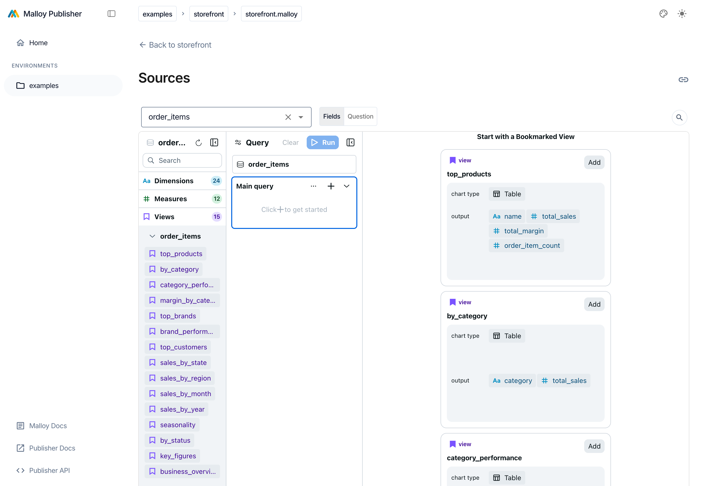
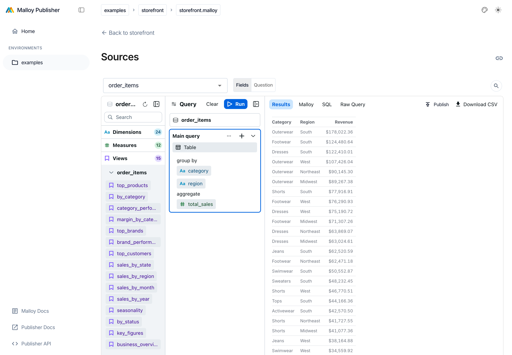
The design
Question mode reduces the explorer to three questions, asked in order, each unlocked in sequence:
- What would you like to measure? Pick a measure, grouped by source label and listed by its field label. With nothing else answered yet, you get one big, beautiful number. Add it to a dashboard as a KPI tile, start a new notebook from here, or send the link to chat to share live data context.
- What would you like to group by? Optional. We assume a categorical group-by dimension produces a ranked bar chart with a top-N control. A date or timestamp implies a time series, with a grain picker (year through day) that only appears when it can be applied.
- What would you like to segment by? Optional, and only after a group-by has been selected. It splits each group into series: stacked bars, or one line per segment.
The principle is that every input yields a valid visualization. The chart is chosen deterministically based on the metadata of the fields that were selected, so all user inputs should produce valid charts rather than flat tables. Show it as defaults to Auto, which you can override manually.
| Answers | Auto draws | Ordering |
|---|---|---|
| measure only | KPI card | — |
| + text group-by | bar chart | by the measure, descending, top N |
| + date/time group-by | line chart | by time, ascending, all rows |
| + segment | stacked bar / multi-line | as above; top N groups kept whole |
| one text group-by, no segment | Map available (shape map) | every region, unranked |
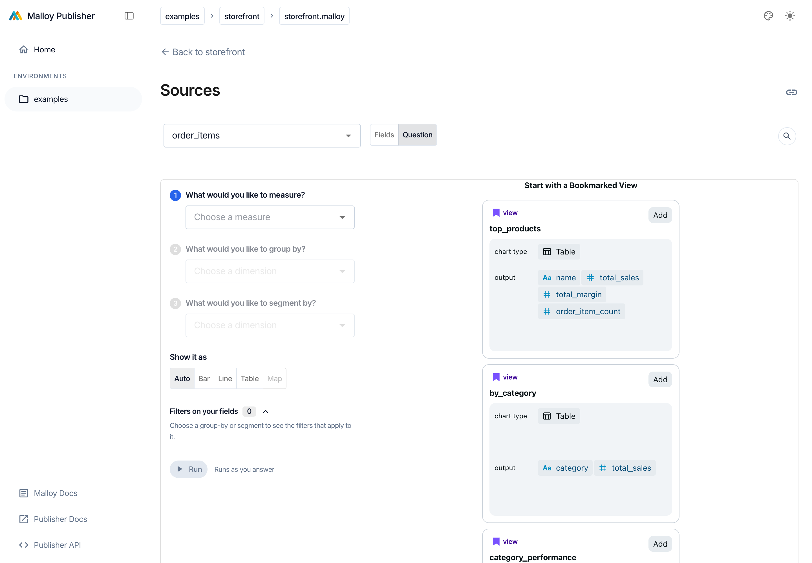
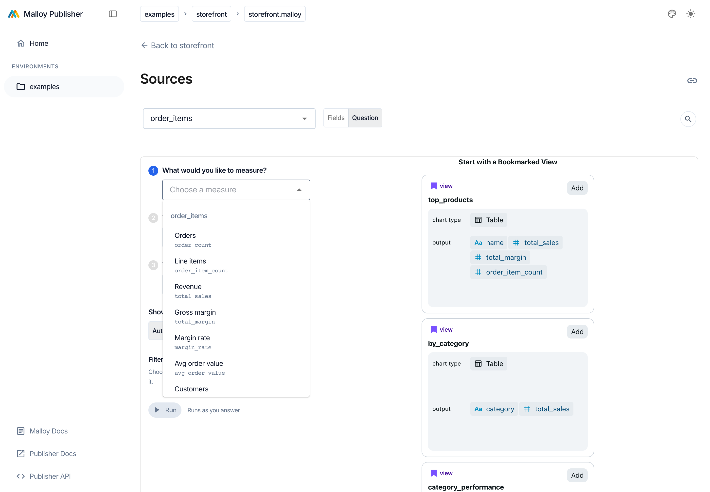
# label with its model name under it, so you can pick by the plain-English name and
still
see which underlying field was used.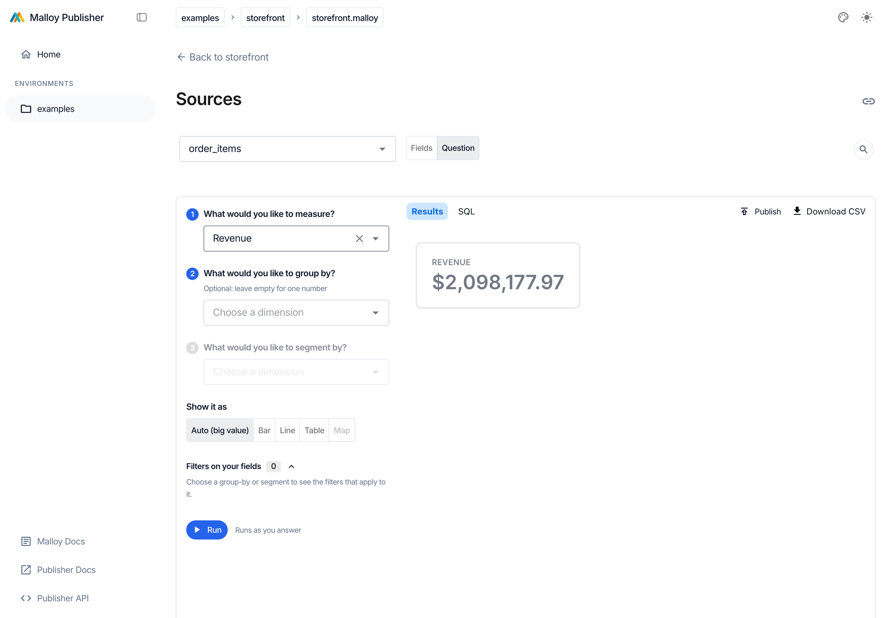
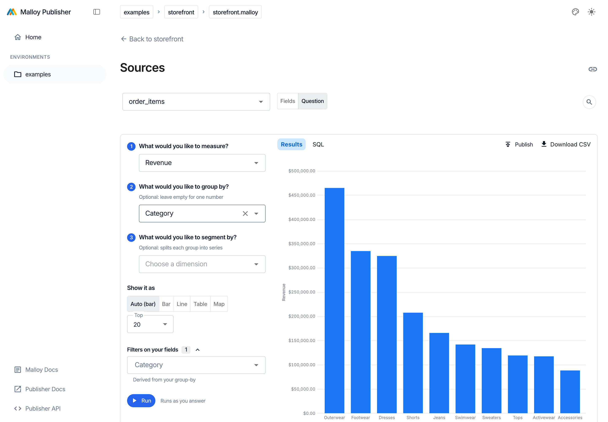
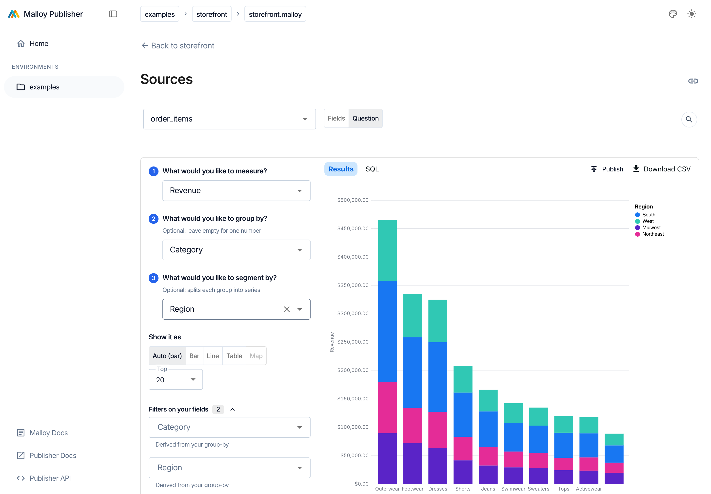
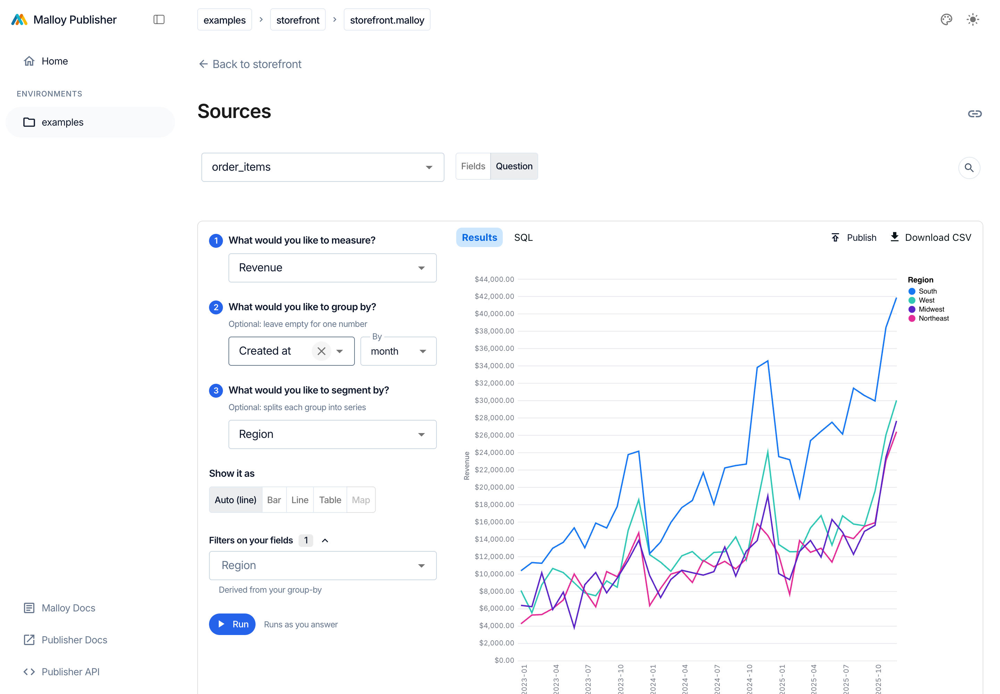
Filters next to the fields they filter
Fields mode lists every given in one flat panel. Question mode works out which field each given filters and puts it next to that field. It looks, in order, for:
- a binding in the model, like
where: category ~ $CATEGORYin a dashboard tile; - the given's
suggestdimension; - a field with the same name as the given.
The filters then land in three groups:
- Filters on your fields: givens for your group-by or segment, plus a value filter for any chosen text field without one.
- More filters on source: collapsed by default. They still apply when set, which the UI notes.
- Other parameters: givens tied to no field. They're sent with the query, and only matter if the source reads them.
It's still Malloy
Your answers become a plain Malloy query, and the SQL tab shows the SQL it compiles to. The stacked chart above is:
# bar_chart.stack run: order_items -> { group_by: category, region aggregate: total_sales order_by: total_sales desc limit: 400 // top 20 categories × up to 20 segments each }
A set filter adds a line like where: category ~ $CATEGORY. Question mode adds it only when the
given has a value or a default, so an unset filter can't break the query. (The Malloy query AST can't express
$GIVEN bindings, which is why Question mode writes query text instead.)
Round-trip with Fields
Switching modes keeps the query. Question mode's answers become a Fields AST, and a Fields query becomes
answers, including a named view, which is expanded from the compiler's drill_expression and
drill_filters annotations. A Fields query can say more than three questions can (a second measure,
a nest, a having). When it does, Question mode lists what it couldn't carry instead of dropping it
silently: "Not carried over from Fields: the extra measure Margin rate; the nested view by_month."
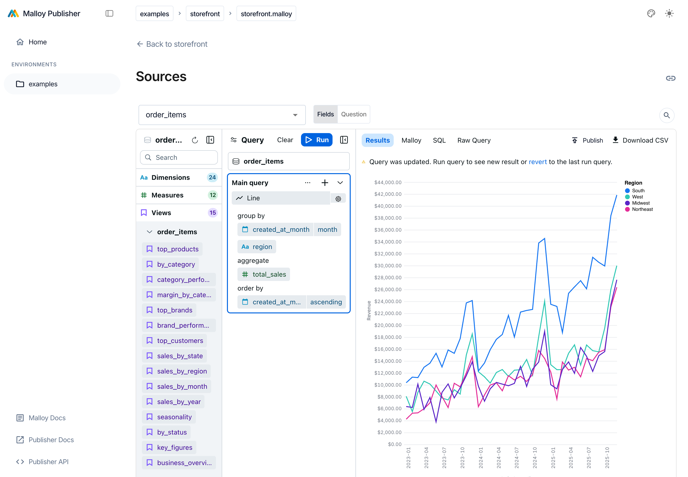
created month
and
region, aggregate total_sales, order by created month ascending,
rendered as a line chart.
An analyst can pick up exactly where the question left off.
Who it's for
| Persona | Fields | Question |
|---|---|---|
| Analyst / modeler | Uses this by default. Full grammar, nests, multiple measures | A fast first draft to refine in Fields mode later. Prefers to use this when sharing a link to colleagues |
| Manager / PM | Aspires to use this comfortably | Can't mess this up, gets a chart every time and learns about the data |
| Arrived from a link or a dashboard | Doesn't know which source or view to use | Starts from the fields they came to ask about |
| Agent-assisted | Less optimized for computer-use agents | The three slots match how get_context retrieval is already typed (measure, dimension). Should
likely prefer to share self-serve analytics answers built from model catalog this way. |
Prototype implementation
packages/sdk/src/components/Model/Question/:questionQuery.ts(fields, bindings, Malloy text),interchange.ts(Fields ↔ Question),QuestionPanel.tsx(the form). About 1,700 lines, plus 24 unit tests in two spec files.- The
Fields | Questiontoggle inModelExplorer.tsx, remembered inlocalStorage. Question mode runs 350 ms after the last answer and automatically discards stale results. - No server change. It uses the existing query endpoint and the existing givens.
07Experiment: a cold start from an existing repo
Everything above started inside the Publisher repo. A real user is more likely to start from their own repo, with an agent doing almost everything. So I tried that too.
A fresh agent session took my existing obj-football-pbp project, an NFL play-by-play dataset with
its own
Malloy model, stood it up as a Publisher workspace, built no-code dashboards on it, and wrote an experience
report. It had only what a new user likely brings: tokens to spend and a lazy prompt asking the AI to figure out
how to
use Malloy Publisher to build dashboards.
What worked
- Docs and skills written for agents. Both dashboards were built from them with no trial and error on the dashboard format.
- The scaffolder. One command produced a working workspace.
- Dashboards are plain
.malloyfiles. The Console's drag-and-drop editor edits the same file, so there's no separate layout to keep in sync. - The existing model ported almost unchanged, needing only labels, formats, and a few chart-shaped views.
- Most errors say how to fix them, like the reserved-word message for
WEEK. - Everything can be checked over REST, without a browser.
What got in the way
| Friction | What happened | Directional fix |
|---|---|---|
| Port collisions | The new server took 4000, failed on 4040, and exited. The first status check reached another Publisher and returned a misleading 404. | Check both ports before binding either |
| Reserved words, two ways | A filter named WEEK got a clear message. A column named week got a parser error
plus eight follow-on errors. |
The same quote-it message for columns |
| No MCP | An agent that starts the server can't connect to its MCP tools, so it used REST and the MCP features went untested. | Let an agent start the server and still use MCP |
| Silent failures | Many are covered only in the docs, rather than caught as errors or warnings. | Promote them to compile errors or load warnings |
| Number filters | No dropdown, so season only gets a slider. |
Dropdowns for low-cardinality numbers |
| Data copied twice | Into the package, then into publisher_data/. |
Reference an external data directory |
| Slow first start | About 20 seconds with npx. |
Pin and install once |
| Drill on click | Didn't fire in the automated browser. | Check synthetic pointer events |
What could be optimized
- Shared tile filters. Every tile repeats the same
where:clause; a shorthand would cut the boilerplate, and the tile that silently ignores a filter because someone forgot it. - A one-call dashboard check that runs every tile and reports row counts and errors.
- The agent's own process. Skipping compile-before-save cost two extra fix rounds. It also missed that
questionable-footballis built on the same dataset and would have been a faster start.
What the agent learned
The agent expected a query language with notebooks, where dashboards meant writing a React or HTML app. Instead, dashboards are built in and declared in Malloy; givens are typed parameters whose type picks the control; and access control, persistence, and MCP are part of the product. The catch: dashboard tags are checked far less strictly than the model.
Against comparable tools (from memory, not web researched), Rill and Evidence.dev are closest on "no code, files in git, local DuckDB," and Cube, Looker, Omni, Snowflake, and the dbt Semantic Layer on "governed semantic layer an agent can query." Publisher is the only one it knew of that does both in one file format.